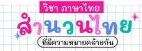

สำนวน
สำนวน คือถ้อยคำหรือกลุ่มคำที่เรียบเรียงขึ้นในเชิงเปรียบเทียบ [1] มีความหมายไม่ตรงตามตัวอักษร [1] แต่เป็นความหมายแฝงที่ต้องอาศัยการตีความ [1] เกิดจากภูมิปัญญาของคนรุ่นก่อนที่กลั่นกรองมาจากวิถีชีวิต ธรรมชาติ และสิ่งแวดล้อมเพื่อใช้เป็นข้อคิดเตือนใจหรือเปรียบเปรยพฤติกรรมต่าง ๆในภาษาไทยคำว่า "สำนวน" มักถูกใช้เป็นคำกว้าง ๆ ซึ่งครอบคลุมไปถึง สุภาษิต และ คำพังเพย การแบ่งหมวดหมู่สำนวนไทยตามที่มาสำนวนไทยเกิดจากการช่างสังเกตของคนโบราณ โดยกลุ่มใหญ่ ๆ มักมาจาก:หมวดธรรมชาติและสัตว์: เปรียบเทียบพฤติกรรมมนุษย์กับธรรมชาติ เช่น วัวหายล้อมคอก, นกสองหัว, จับปลาสองมือหมวดวิถีชีวิตและสิ่งของ: สะท้อนความเป็นอยู่ของคนไทยในอดีต เช่น บ้านแตกสาแหรกขาด, ลงเรือลำเดียวกัน, ตกกระไดพลอยโจนหมวดอวัยวะร่างกาย: นำอวัยวะมาสื่อถึงอารมณ์หรือนิสัย เช่น ใจปลาซิว, ปากหวานก้นเปรี้ยว, หัวมงกุฎท้ายมังกร